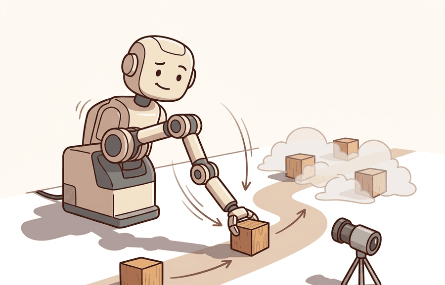

"Each joint buys you one freedom and sells you one responsibility. The chain collects both debts."
An Arm Assembler

Robot arms, joints, the kinematic chain is one lens on kinematics and robot motion. We study it because an embodied agent needs decisions that survive contact with noisy sensors, delayed effects, and changing environments.
This section develops the technical contract for Robot arms, joints, the kinematic chain into a usable mental model. First we define the object of study, then we connect it to the agent loop, then we test it with a compact implementation.
The key question in Robot arms, joints, the kinematic chain is practical: what must the agent know, what can it observe, what action is available, and what evidence shows that the action worked under the stated conditions?
A representation earns its place when it changes the measurable action interface. In Robot arms, joints, the kinematic chain, the reader should keep asking which decision becomes easier, safer, or more reliable.
Theory
Before diving into formalism, consider why the kinematic chain abstraction exists at all. A robot arm must map a high-level task goal, such as "place the gripper 30 cm above the conveyor," into specific motor commands for each of its joints. Without a systematic way to track how each joint rotation propagates through the structure, a planner would need to re-derive geometry from scratch for every configuration. The kinematic chain gives the agent a single composable model: multiply the transforms in order and you immediately know where every link and the end-effector sit in the world frame. This composability is what makes motion planning, workspace analysis, and closed-loop control tractable. Without it, embodied systems cannot reliably reason about reachability, avoid collisions, or hand off a grasp target to a controller.
For Robot arms, joints, the kinematic chain, the practical design rule is to make the interface inspectable before optimization begins: inputs, outputs, units, latency, bounds, and failure labels should all be visible in the saved artifact.
A robot arm is a sequence of rigid links connected by joints. Each joint contributes one controlled motion, usually a rotation for a revolute joint or a translation for a prismatic joint. The kinematic chain is the ordered product of those link transforms, so a small upstream joint change moves every downstream frame.
This is why joint ordering and frame naming are not administrative details. If the URDF frame tree, the controller's joint vector, and the planner's joint vector disagree by one index, the end-effector pose can look plausible while the physical arm moves the wrong link.
The mechanism in Robot arms, joints, the kinematic chain is the contract between representation and action. Name what enters the module, what leaves it, which assumptions make that transformation valid, and which log would reveal a bad handoff.
Worked Example
The example builds a 3-link planar chain as an ordered product of per-joint transforms, records every intermediate link frame, then perturbs one joint and verifies the topology invariant: moving joint $k$ must displace link $k$ and all its descendants, and nothing upstream.
import numpy as np
def Tz(theta, length):
"""Revolute joint about z, then translate 'length' along local x."""
c, s = np.cos(theta), np.sin(theta)
return np.array([[c, -s, 0, length*c],
[s, c, 0, length*s],
[0, 0, 1, 0],
[0, 0, 0, 1]])
lengths = [0.30, 0.25, 0.15] # link lengths, base -> tool
def chain_frames(q):
T = np.eye(4)
frames = [T[:3, 3].copy()] # base origin
for qi, Li in zip(q, lengths):
T = T @ Tz(qi, Li)
frames.append(T[:3, 3].copy()) # each downstream link origin
return np.array(frames)
q0 = np.deg2rad([20, -35, 50])
F0 = chain_frames(q0)
# Perturb ONLY joint index 1 (the middle joint)
q1 = q0.copy(); q1[1] += np.deg2rad(10)
F1 = chain_frames(q1)
moved = np.linalg.norm(F1 - F0, axis=1) > 1e-9
print("frame moved? (base, link0, link1, link2):", moved.tolist())
print("tool pose:", np.round(F0[-1], 4))
assert not moved[0] and not moved[1], "upstream frame moved: joint order bug"
assert moved[2] and moved[3], "downstream frame frozen: chain broken"
print("topology invariant holds: only joint-1 descendants moved.")
The assertions are the cheap diagnostic that catches a one-index mismatch between the URDF, the controller joint vector, and the planner: when an upstream frame moves under a downstream perturbation, the chain ordering is wrong even if the tool pose looks plausible.
The fragment should expose joint order, axis, link frame, tool frame, and joint limits. Pinocchio, Drake, and MoveIt 2 provide maintained kinematic trees once the chain convention is audited.
Practical Recipe
- Write the observation, action, and success metric before choosing a model.
- Build a baseline that is simple enough to debug by inspection.
- Add the library implementation only after the baseline behavior is understood.
- Record failures as structured cases: perception error, state error, planning error, control error, or evaluation error.
- Run at least one perturbation test before trusting the result.
The rigid kinematic chain is accurate when links are stiff, joints are well-actuated, and the physical structure matches the URDF. It breaks down in four common situations: (1) cable-driven or tendon-actuated arms, where compliance in the transmission means joint encoder readings do not reflect true link angles; (2) long, slender links under load, where link flex shifts the actual end-effector pose away from the rigid-body prediction; (3) parallel mechanisms such as the Delta robot or Stewart platform, where the single serial chain formula does not apply and closed-loop kinematic constraints must be solved instead; (4) contact-rich manipulation, where external forces deform the configuration in ways the kinematic model ignores entirely. Recognizing which regime applies before choosing a solver prevents a class of plausible-looking failures that only reveal themselves at deployment.
The common mistake in Robot arms, joints, the kinematic chain is to celebrate the component score before checking the closed-loop handoff. The failure usually appears at the boundary: stale state, wrong frame, delayed action, saturated actuator, or metric that ignores the real task cost.
A robotics team using Robot arms, joints, the kinematic chain should log not only final success, but intermediate observations, chosen actions, controller status, and recovery events. The logs reveal whether the method is solving the task or merely passing the easiest episodes.
Treat robot arms, joints, the kinematic chain like a control-room label. If the label does not tell a future debugger what moved, what sensed, or what failed, it is decoration rather than engineering knowledge.
For Robot arms, joints, the kinematic chain, treat frontier claims as hypotheses until they expose enough detail to reproduce the result: data boundary, embodiment, controller interface, evaluation panel, and failure cases.
Can you name the observation, state estimate, action, success metric, and most likely failure mode for Robot arms, joints, the kinematic chain? If not, the system boundary is still too vague.
Production Pattern
Robot arms, joints, the kinematic chain sits inside the Part II robotics contract: geometry defines where things are, kinematics defines what motion is possible, dynamics defines what motion costs, control defines how errors are corrected, and sensing defines what the agent can know on time.
Separate joint topology, joint limits, link frames, and end-effector task frames before solving motion. This makes the section useful to students, builders, and researchers at the same time: the idea has an intuitive role, a formal interface, a runnable check, and a failure mode that can be reproduced.
For Robot arms, joints, the kinematic chain, kinematics maps joint or body motion into task-space motion without explaining forces. Preserve joint limits, frame conventions, velocity units, and singularity margins in the artifact.
| Tool or Library | What It Handles | Verification Check |
|---|---|---|
| Pinocchio | computes articulated-body kinematics, dynamics, and derivatives | Verify model frames, joint ordering, and derivative convention against the URDF. |
| Robotics Toolbox for Python | supports practical work on Robot arms, joints, the kinematic chain | Verify the library output against the hand-built baseline on one small case. |
| MoveIt 2 | supports practical work on Robot arms, joints, the kinematic chain | Verify the library output against the hand-built baseline on one small case. |
| Drake | models dynamical systems, multibody plants, optimization, and controllers | Verify scalar type, plant finalization, frame convention, and solver status. |
| ROS 2 control | supports practical work on Robot arms, joints, the kinematic chain | Verify the library output against the hand-built baseline on one small case. |
Use this recipe when turning Robot arms, joints, the kinematic chain into code, a simulator experiment, or a robot diagnostic. The point is not to use every library. The point is to keep the hand-built baseline and the maintained-tool path comparable.
- Write the joint vector, frame target, velocity convention, and constraint set before solving.
- Check forward kinematics on a known posture, then perturb one joint and inspect the end-effector delta.
- Compare an analytic or numerical Jacobian with Pinocchio, Robotics Toolbox, or Drake on the same robot model.
- Log residual error, joint-limit distance, manipulability, and solver iteration count in one artifact.
- Treat singularities and infeasible targets as design signals, not as solver annoyances.
For Robot arms, joints, the kinematic chain, compare methods only through one saved artifact that preserves the inputs, outputs, units, timestamps, latency budget, configuration, seed, metric definition, and failure labels relevant to this section. The comparison is meaningful only when the same script evaluates the same panel.
Extend the section exercise by adding one perturbation specific to Robot arms, joints, the kinematic chain and one latency or uncertainty check. Save the result in the EvidenceRecord schema, then explain which library output you trust and why.
Kinematic failures often arrive as a plausible pose with an impossible motion. Inspect joint order, parent-child frames, link lengths, joint limits, and mimic joints before blaming the planner. For this section, first reproduce one two-link chain by hand, then rerun it through Pinocchio, Robotics Toolbox for Python, MoveIt 2, Drake, or ROS 2 tf2. If the two disagree, inspect conventions and timing before changing the model.
Technical Core
Robot arms, joints, the kinematic chain needs a topic-native core: variables, equations or system contracts, an algorithmic procedure, an expected output, and a failure diagnosis. Figure 5.4.T summarizes the chain this section must preserve when moving from a teaching example to a real embodied system.
$q=[q_1,\ldots,q_n]^\top,\quad T_{0e}(q)=T_{01}(q_1)T_{12}(q_2)\cdots T_{n e}(q_n)$
Each transform carries a parent frame to a child frame. A revolute joint changes a rotation about its axis, while a prismatic joint changes a translation along its axis. The chain convention must match the robot description file and the controller interface.
- List joints in the exact order used by the controller and robot model.
- For each joint, record parent frame, child frame, joint type, axis, origin transform, and limits.
- Multiply transforms from base to tool and inspect every intermediate frame on a known posture.
- Validate one joint at a time by perturbing it and checking that only downstream frames move.
| Contract Field | What To Specify | Why It Matters |
|---|---|---|
| State and observation | Variables, units, timestamps, frames, and uncertainty. | Prevents a model score from being mistaken for robot capability. |
| Action interface | Command type, limits, update rate, and safety fallback. | Makes the learned or planned output executable. |
| Evidence artifact | Trace, metric, configuration, seed, and failure label. | Allows baseline and library path to be compared in one pass. |
| Tool path | Modern Robotics, Pinocchio, Drake, ROS 2 tf2, MoveIt, NumPy | Shows the practical library route after the mechanism is understood. |
Expected output is a base-to-tool transform and a list of intermediate link frames that match the robot model on a neutral posture. A single-joint perturbation should move the perturbed link and all children, never its ancestors.
A kinematic chain fails when joint order differs between software layers, frame origins are copied from CAD without checking axes, joint limits are missing, or a fixed tool transform is omitted from the end of the chain.
Section References
Core references for Robot arms, joints, the kinematic chain: Modern Robotics; Murray, Li, and Sastry; Siciliano et al.; LaValle; and official documentation for Drake, MuJoCo, Pinocchio, CasADi, python-control, GTSAM, ROS 2, and OpenCV as applicable.
Use these references to check notation, frame conventions, units, solver assumptions, and maintained-library behavior.
Robot arms, joints, the kinematic chain is useful when it makes the perception-action loop more reliable, not when it merely adds a more impressive model name.
Design a method-matched experiment for Robot arms, joints, the kinematic chain. Specify the environment, observations, actions, metric, one perturbation, and the library output you would compare against the hand-built baseline.